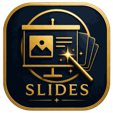

Ler documento
✦
Solte o arquivo .docx aqui
ou clique para escolher · estudo, sermão ou apostila
Estrutura reconhecida
Nenhum documento carregado.

Igreja Vidas · MENTOR
A paleta escolhida vale para os slides gerados e para o próprio app. Ela fica guardada neste navegador e viaja junto com o roteiro em JSON, no campo paleta.